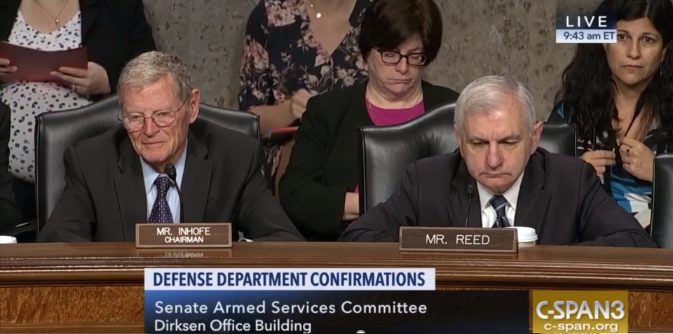
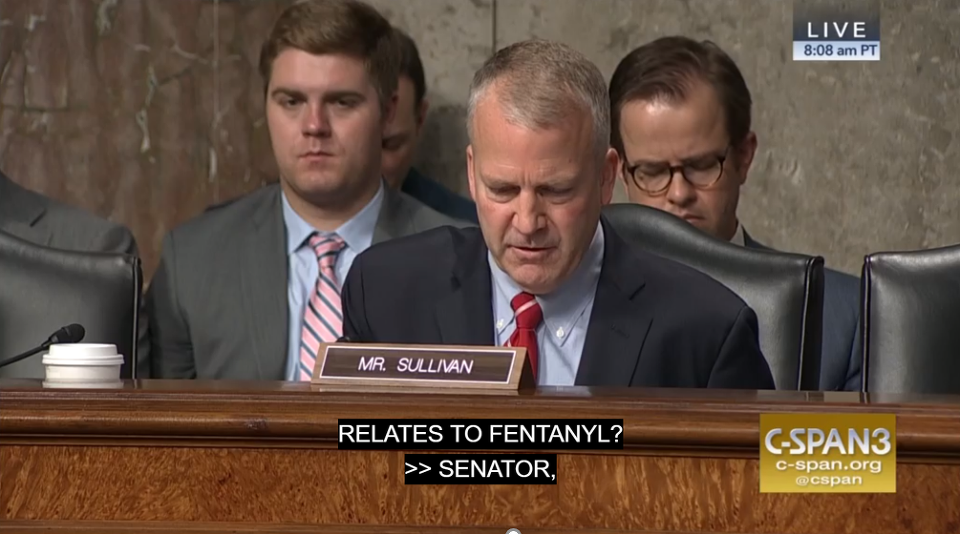
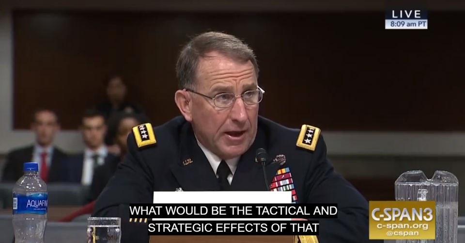

주한미군 사령관 내정자가 문재인의 평양선언에 제동을 걸었다고요 ??
게시: 2018-09-27T20:14:08+09:00
최근 아래와 같이 미국이 문재인 정부의 평양선언 등 남북 화해 모드에 제동을 걸고 있다는 기사가 떴었습니다.
"GP철수, 유엔사 판단받아야"···美, 평양선언 또 제동걸었다
에이브럼스 청문회 "北, 재래식·비대칭 위협 여전"
"남북 평화협정 체결돼도 정전·유엔사 소멸 안 돼,
을지 중단 준비태세 약화, 봄 훈련 계획대로 진행"
군사위원장 "한·미동맹 간격 벌어지고 있어 걱정"
기사 중에는 이런 구절도 있습니다.
제임스 인호프 상원 군사위원장 대행은 이날 "나는 우리와 동맹 한국과 사이가 점점 벌어지는 것을 우려한다"며 "한국은 북한과 최근 3차 정상회담에서 평화협정에 대한 열망을 담았는데 이같은 사태 발전이 군사동맹에 어떤 영향을 미칠지 불확실하다"고 말했다. 그러면서 "많은 전문가들은 평화협정이 한반도에서 미군주둔의 필요성에 의문을 제기할 것이라고 우려를 표명하고 있다"고 말하기도 했다.
과연 주한 미군 사령관 내정자 청문회는 이렇게 한국 정부와 미국 정부 사이의 마찰과 갈등에 대한 우려로 가득했을까요 ? 결론부터 이야기하면 전혀 그렇지 않았습니다. 사실 기사 내용도 정작 읽어보면 저 자극적인 헤드라인과는 달리, 담담한 청문회 문답 관련 사실들이 나열되어 있는 정도입니다.
먼저, 미국의 보수 매체들에서는 이 청문회에 대해 뭐라고 보도했는지 보시지요.
https://www.stripes.com/gen-abrams-joint-us-south-korea-military-exercises-a-top-priority-1.549099
Gen. Abrams: Joint US-South Korea military exercises a top priority
미군 공식 기관지인 Stars & Stripes 지의 주제는 연례 2차례 수행되던 대규모 한미 합동 군사 훈련을 트럼프 대통령이 지난 6월 싱가폴 회담 이후 중단시킨 그 훈련 중단으로 인해 한반도에서의 군사 대비 상태가 얼마나 약화될 것인가에 대한 우려입니다. 군사위 소속 의원들의 이런 우려에 대해 에이브럼즈 장군은 '정확한 평가는 내가 직접 현장에 가서 해야 한다' 라고 답변했습니다. 한국 정부와의 갈등에 대해서는 전혀 언급이 없습니다.
US General: Suspended Drill on Korean Peninsula Caused Military 'Degradation'
북미 대화에 대체로 부정적인 입장이었던 VOA(Voice of America)도 마찬가지입니다. 트럼프의 훈련 중단이 군사력 약화로 이어지는 것에 대해 우려할 뿐입니다.
Trump’s cancellation of exercises caused 'slight degradation' of military, nominee for US Forces Korea says
보수 성향의 정치 매체인 워싱턴 이그재미너도 주한 미군 사령관 내정자가 트럼프에 의한 훈련 중단으로 인해 군사 준비 태세에 약간 저하가 생기는 것을 우려한다고 말한 것을 보도했습니다. 어디에도 평양 선언에 대해 제동을 걸었다던가, 한국 정부와의 마찰에 대한 보도는 찾을 수 없습니다.
대체 국내 언론에서는 어느 해외 언론을 보고 이런 기사를 쓴 것일까요 ? 혹시 저 청문회장에 직접 기자가 찾아 갔었을까요 ? 그 청문회가 일반 대중이나 언론이 직접 참관할 수 있는 자리인지는 모르겠으나, 인터넷 미디어의 발달로 인해 저 같은 일반인도 그 청문회 내용을 그대로 볼 수 있습니다. 바로 아래 site를 통해서입니다.
이 site에서는 주한 미군 사령관 내정자인 에이브럼스 장군 뿐만 아니라 미해군 남부 사령부(U.S. Southern Command) 사령관으로 내정된 폴러(Craig Faller) 제독에 대한 청문회도 함께 진행된 이 2시간짜리 청문회의 모든 장면이 캡션(기계로 생성된 caption이라 일부 부정확하거나 빠진 부분도 있습니다)과 함께 제공됩니다.
인호프 상원 군사위원장 대행이 정말 "나는 우리와 동맹 한국과 사이가 점점 벌어지는 것을 우려한다"라고 언급을 했을까요 ? 의장(chairman)인 인호프는 아니고 ranking member인 리드(Reed) 의원의 모두 발언에서 주한미군 사령관이 당면할 문제들을 열거하면서 나오긴 했습니다.

(왼쪽이 인호프 의장, 오른쪽이 리드 의원입니다.)
리드 :
에이브럼스 장군과 그 가족을 환영합니다. 싱가폴 정상 회담 이후 한반도에서의 긴장이 완화되고는 있으나, 트럼프 대통령이 주장하는 것과는 달리 상황은 위태롭고 위험한 상태 그대로입니다. 미국과 그 동맹국에 대해서 북한의 핵과 재래식, 그리고 생화학 무기로 인한 상당한 군사적 위험이 존재합니다. 저는 최대 압박 작전의 추친력이 상실되는 것과 싱가폴 회담 이후 비핵화에 대해 새로운 진전이 없다는 점에 대해 무척 실망했습니다. 합동 군사 훈련 취소로 인해 우리 군대와 동맹군의 대비 상태에 문제가 있지 않을지 염려됩니다. 훈련 중단은 우리 측에서는 상당한 양보였는데 그에 상응하는 북한의 조치는 보지 못했습니다. 에이브럼즈 장군, 저는 당신의 견해와 이런 협상이 일어나는 동안 합동군의 준비 태세 유지에 대해 어떻게 예상하는지 듣고 싶습니다. 마지막으로, 저는 우리와 우리 동맹국인 대한민국 간에 점점 간격이 벌어지는 것에 대해 우려합니다. 대한민국은 세 번의 정상회담을 마쳤고, 남북한 모두 평화 협정에 대한 갈망을 이야기했습니다. 그것이 우리의 오랜 중요 군사 동맹에 어떤 영향을 끼칠지 명확하지 않습니다. 예를 들어, 많은 전문가들이 평화 협정이 한반도에 미군이 존재해야 할 필요성에 대해 의문을 가져올 것이라고 우려합니다. 북한에 의한 미국과 한국과 일본에 대한 위협이 분명한 상황에서 우리 동맹의 힘은 앞으로 오랜 시간 동안 매우 중요합니다. 외교적 진전이 일어나고 있는 상황에서 대한민국과의 동맹을 어떻게 유지할 것인지 고견을 듣고 싶습니다. (이하 내용은 폴러 제독에 대한 내용이므로 생략)
REED :
LET ME WELCOME YOU AND YOUR FAMILIES, GENERAL ABK -- ABRAMS. GENERAL ABRAMS WHILE TENSIONS ON THE KOREAN PENINSULA HAS BEEN REDUCED SINCE THE SINGAPORE SUMMIT, THE SITUATION REMAINS PRECARIOUS AND DANGEROUS. DESPITE PRESIDENT TRUMP'S ASSERTIONS TO THE CONTRARY, THERE REMAINS A SIGNIFICANT MILITARY THREAT TO THE UNITED STATES AND ITS ALLIES BECAUSE OF THE REGIME'S ARRAY OF NUCLEAR CONVENTIONAL BIOLOGICAL WEAPONS. I'M GREATLY DISAPPOINTED IN THE MOMENTUM THAT THE MAXIMUM PRESSURE CAMPAIGN HAS BEEN LOST AND WE'VE SEEN NO DEVELOPMENTS ON DENUCLEARZATION SINCE THE SINGAPORE SUMMIT. I'M CONCERNED ABOUT THE READINESS OF OUR TROOPS AND THOSE OF OUR ALLIES BECAUSE OF THE CANCELLATIONS OF JOINT MILITARY EXERCISES. SUSPENDING EXERCISES WAS A SUBSTANTIAL CONCESSION ON OUR PART AND I'VE NOT A CORRESPONDING. GENERAL ABRAMS, I WOULD LIKE TO HEAR YOUR REVIEW AND HOW YOU ANTICIPATE MAINTAINING THE READINESS OF THE JOINT FORCES AT THE SAME TIME THAT THESE NEGOTIATIONS ARE TAKING PLACE. FINALLY, I'M CONCERNED THERE'S A WIDENING GAP BETWEEN US AND OUR ALLIES THE REPUBLIC OF KOREA. THE REPUBLIC OF KOREA CONCLUDED THREE SUMMITS AND BOTH SIDES STATE THIRD DESIRE FOR A PEACE TREATY. IT'S UNCLEAR HOW IT WILL AFFECT OUR LONG STANDING AND CRITICAL MILITARY ALLIANCE. FOR EXAMPLE, MANY EXPERTS EXPRESSED CONCERNS THAT A PEACE TREATY MAY CALL INTO QUESTIONS FOR THE NEED FOR THE U.S. TROOPS ON THE KOREAN PENINSULA. CLEARLY THE THREATS POSED BY NORTH KOREA AND THE UNITED STATES AND SOUTH KOREA AND JAPAN. THE STRENGTH OF OUR ALLIANCE REMAINS CRITICAL FOR YEARS TO COME. I LOOK FORWARD TO HEARING FROM YOU HOW TO YOU MAINTAIN OUR ALLIANCE WITH THE REPUBLIC OF KOREA GIVEN THE DIPLOMATICS DEVELOPMENTS THAT HAVE OCCURRED.
물론 반대의 언급도 나왔습니다. 바로 이어진 의장인 인호프 의원의 발언이 그랬습니다.
인호프 :
북한의 개발이 진전을 이루면서 무척 무시무시한 상황이었습니다. 돌아보니 카일 의원이 계신데, 카일 의원께서 이 위원회와 상원을 떠나 계신 5년 8개월 동안 우리가 본 것은 북한의 많은 활동들이었습니다. 13번의 성공적인 탄도 미사일 발사를 수행했고, 가장 무서운 순간은 저들이 가지지 않기를 바라던 그런 사정거리를 저들이 가졌다는 것을 분명히 보여준 2017년 11월 28일의 발사였지요. 그러니 지난 오랜 기간 동안 겪은 것과는 다른 상황에 처하게 된 것입니다. 그들의 눈에는 성공이었겠지만 우리에겐 무시무시한 일이었지요. 이제 테스트는 멈췄지만 북한의 미사일과 핵 프로그램은 완성 단계에 있습니다. 핵탄두를 장착한 미사일이 미국 전역에 도달할 수 있으며 그건 심각한 일입니다. 한동안 고조된 긴장 상태였으나 싱가폴 정상회담은 옮은 방향으로 나아간 발걸음이었습니다. 문 대통령과 김정은 간의 최근 회담은 진전이 있다는 것을 보여주었습니다. 그들이 북한에서 만났고 이제 남한에서 다시 만날 것을 이야기하고 있다는 사실은 1년 전만 해도 상상하기 어려운 일이었습니다. 그러니 우리는 많은 진전을 이룬 것이지요. 그런 관점에서, 에이브럼즈 장군, 이 청문회를 좋은 기회 삼아 한반도의 현재 안보 상황에 대해 당신의 견해를 들려주시면 좋겠습니다. 제가 언급한 그런 회담들과 북한과 남한 모두에서 일어난 회담들이 있는 상황에서요. 거기에 대해 장군의 생각은 어떠십니까 ?
INHOFE :
IT'S BEEN SCARY SINCE NORTH KOREA MADE AVANCEMENTS. I LOOK OVER AND SEE SENATOR KYL DURING THE FIVE YEARS AND EIGHT MONTHS YOU WERE OUT OF THIS PARTY. OUT OF THE COMMITTEE, AND OUT OF THE SENATE. WHAT WE'VE SEEN AND THE NUMBER OF THE ACTIVITIES THAT ARE TAKING PLACE FROM NORTH KOREA, IF CONDUCTED 13 SUCCESSFUL BALLISTIC MISSILE LAUNCHES, AND THE SCARIEST WAS NOVEMBER 28th,2017. ONE THAT DEMONSTRATED CLEARLY THAT THEY HAD THE RANGE THAT WE HOPED THEY WOULD NOT HAVE. SO WE HAVE NOW A DIFFERENT SITUATION THAN WE'VE HAD FOR A LOT OF YEARS. THEY HAVE ACHIEVED ONLY SUCCESSES, IN THEIR EYES, THAT ARE SCARY TO US. THE TESTING HAS PAUSED, NORTH KOREA'S MISSILE AND NUCLEAR PROGRAMS HAVE MATURED. THE MISSILES CAN REACH THE ENTIRE UNITED STATES WITH A NUCLEAR BAY NUCLEAR PAYLOAD AND THAT'S SERIOUS. AFTER A PERIOD OF INCREASED TENSIONS, THE SINGAPORE SUMMIT WAS A STEP IN THE RIGHT DIRECTION. RECENT MEETINGS WITH PRESIDENT MOON AND KIM JONG-UN HAVE SHOWN THAT THERE'S PROGRESS. THE FACT THEY HAD THEIR MEETING TOGETHER IN NORTH KOREA AND THEY ARE NOW TALKING ABOUT DOING IT AGAIN IN SOUTH KOREA, THAT'S SOMETHING WE WOULD NOT HAVE ANTICIPATED EVEN A YEAR AGO. SO WE'VE MADE A LOT OF PROGRESS, IN THAT RESPECT. WHY DON'T YOU TELL US, I THINK, THIS IS A GOOD HEARING, GENERAL ABRAMS. YOUR ASSESSMENT OF THE CURRENT SECURITY SITUATION ON THE PENINSULA. THE FACT WE'VE NOW HAD THE MEETINGS I ADDRESSED AND WE'VE ALSO HAD A PRESENCE IN BOTH NORTH AND SOUTH MEETING TOGETHER. WHAT IS YOUR FEELING ABOUT ABOUT THAT?
짐작하시겠지만, 잭 리드(Jack Reed) 상원의원은 민주당이고, 짐 인호프(Jim Inhofe)는 공화당입니다. 야당은 현 정부를 공격하고 여당은 반대로 옹호하는 것은 한국이나 미국이나 흔한 일입니다. 이런 상황에서 야당 의원들의 일부 공격성 발언이 전체 미국 의회의 분위기인 것처럼 말하는 것은 옳지 않다고 생각합니다.
정작 이에 대한 에이브럼즈 장군의 답변은 어떤 것이었을까요 ? 당연히 좋은 말이 일색입니다.
에이브럼즈 :
의장님, 방금 말씀하신 한반도의 현재 상황에 대해 저는 일시적인 중단 상태이며 한반도에서의 전반적인 긴장 완화(데탕트, detente) 분위기라고 봅니다. 이미 아시다시피 북한으로부터 중대 도발이 마지막으로 있은지 300일이 넘었습니다. 유엔사와 북한 간에 11년만에 처음으로 다양한 레벨에서 고위층간의 대화가 있었습니다. 현재 진행되고 있는 모든 스텝들에 대해 의장님이 묘사하신 것에 저도 동의합니다. 그것들은 중요한 일이고 액면 그대로 받아들여야 합니다. 그와 동시에, 의장님께서도 언급하셨듯이 아직 북한에는 상당한 비대칭 및 대륙간 미사일에 의한 위협이 존재하며 세계에서 4위 규모의 재래식 군대도 유지하고 있습니다. 이들 중 어떤 것도 아직 변한 것은 없습니다. 제 관점은 우리가 현장에서 분명한 시각을 유지하면서 외교적 노력이 계속 되도록 해야 한다는 것입니다.
ABRAMS :
MR. CHAIRMAN, THE SITUATION ON THE PENINSULA TODAY AS YOU HAVE JUST DESCRIBED I WOULD DESCRIBE AS TEMPORARY PAUSE AND A GENERAL FEELING OF DETENTE IF YOU WILL ON THE PENINSULA. IT'S BEEN OVER 300 DAYS AS YOU NOTED SINCE THE LAST MAJOR PROVOCATION FROM THE DPRK AND THERE'S BEEN SIGNIFICANT DIALOG AT PUT.MULTIPLE LEVELS BETWEEN U.N. COMMAND AND THE DPRK AT SENIOR OFFICER LEVEL FOR THE FIRST TIME IN 11 YEARS. I WOULD SHARE YOUR CHARACTERIZATION THAT ALL OF THE CURRENT STEPS THAT ARE ONGOING ARE SIGNIFICANT AND WE SHOULD TAKE THEM AT FACE VALUE. HAVING SAID THAT YOU ALSO MENTIONED THERE STILL REMAINS A SIGNIFICANT ASYMMETRIC AND INTERCONTINENTAL THREAT FROM THE DPRK AS WELL AS THEY MAINTAIN STILL THE FOURTH LARGEST CONVENTIONAL ARMY IN THE WORLD AND NONE OF THEIR POSTURE HAS CHANGED. MY VIEW WE SHOULD REMAIN CLEAR EYED ABOUT THE SITUATION ON THE GROUND AND ALLOW DIPLOMACY TO CONTINUE TO WORK.
에이브럼즈 :
저는 미군과 한국군 간의 관계는 과거 68년의 역사 내내 변함없이 굳건하다고 생각합니다. 한미 관계, 즉 모두가 철갑을 두른 것처럼 강하다고 하는 동맹의 견고함은 흔들리지 않습니다. 아시다시피 지난 65년 간 믿을 수 없을 정도로 많은 수의 도발과 공격성 행동, 그리고 위기를 견뎌 왔습니다. 한미 동맹은 불과 피로 세례를 받았고 철갑으로 보호되어 있습니다. 저는 그 미래에 대해 전혀 걱정하지 않습니다.
ABRAMS :
I THINK THE RELATIONSHIP BETWEEN THE U.S. MILITARY AND THE REPUBLIC OF KOREA MILITARY IS AS STRONG, IF NOT STRONGER, THAN IT'S EVER BEEN IN ITS 68-YEAR HISTORY. I THINK THE RELATIONSHIP, THE STRENGTH OF THE ALLIANCE, WHICH IS DESCRIBED BY EVERYONE AS IRONCLAD, IS UNSHAKABLE. IT'S WITHSTOOD, YOU KNOW, UNBELIEVABLE NUMBER OF PROVOCATIONS AND AGGRESSIVE BEHAVIOR AND CRISES OVER THE LAST 65 YEARS. IT HAS BEEN BAPTIZED IN FIRE AND BLOOD AND IT REMAINS IRONCLAD. I HAVE NO CONCERNS ABOUT THE FUTURE OF OUR RELATIONSHIP.
하지만 저 위에 언급한 국내 언론 보도의 헤드라인은 '"GP철수, 유엔사 판단받아야"···美, 평양선언 또 제동걸었다'라고 꽤 자극적으로 되어 있습니다. 정말 그런 발언이 있었을까요 ? 결론부터 이야기하면 그런 발언이 있긴 했지만 그것이 평양선언에 대한 제동이라고 보는 것은 무리입니다.
항상 그렇습니다만, 보통 데스크가 정하는 헤드라인은 기자가 쓰는 기사 본문보다 훨씬 더 자극적으로 변형됩니다. 이 기사에서도 기사 본문은 헤드라인에 비하면 비교적 사실 그대로를 담담히 적고 있습니다.
에이브럼스 대장은 이날 미 상원 군사위 인준청문회에서 데이비드 퍼듀 의원(공화당)이 "남북 합의에 따른 DMZ 초소 감축을 지지하는지, 우려하는지"를 묻자 "남북 감시초소(GP) 축소는 최근 한국 국방장관과 북한의 상대방이 논의한 것"이라며 "비무장지대(DMZ)내의 모든 활동은 유엔군 사령부의 관할이기 때문에 남북이 대화를 계속하더라도 관련 사항은 빈센트 브룩스 사령관이 이끄는 유엔사에 의해 중개, 판단되고, 준수·집행돼야 한다"고 말했다.
좀더 정확한 판단을 위해, 어떤 상황에서 이런 답변이 나왔는지, 질문은 대체 어떤 것이었는지 직접 읽어보시기 바랍니다. 질문자는 트럼프 대통령의 지지자인 데이빗 퍼듀(David Perdue) 상원의원입니다. 질문자가 트럼프의 지지자인데, 남북 화해 모드에 찬물을 끼얹는 질문을 할 것 같지는 않지요 ?
퍼듀 :
장군께서는 우리가 북한과 협상을 하여 새로운 NDS (National Defense Strategy 국가 방위 전략) 하에 우리의 향후 태세가 어떤 것이 될지 결정하려는 이런 시기에 최근 발표된 DMZ에 걸친 경계 초소의 감축, 그리고 저들이 이야기하는 병력 수 20% 정도의 감축에 대해서도 지지하시나요 아니면 우려하시나요 ?
PERDUE :
DO YOU ALSO SUPPORT OR ARE YOU CONCERNED ABOUT THEIR CURRENT ANNOUNCED REDUCTION OF OUTPOSTS ACROSS THE DMZ AND THEY'RE TALKING ABOUT SOMETHING LIKE A 20% REDUCTION IN THEIR PERSONNEL IN THEIR MILITARY AT A VERY TIME WHEN WE'RE TRYING TO ESTABLISH THESE NEGOTIATIONS WITH NORTH KOREA AND DETERMINE WHAT OUR FUTURE POSTURE IS UNDER OUR NEW NDS?
에이브럼즈 :
의원님, 저는 그 질문에 대한 답을 두개의 별건으로 나누고 싶습니다. 첫번째는 경계 초소 감축에 대한 논의인데, 그건 대한민국 국방부 장관과 북한의 동급 장관과의 논의 중 일부였습니다. 비무장지대에 대한 모든 활동은 UN 사령부의 관할입니다. 그들간의 대화는 계속 해도 됩니다만, 그 결과로 나온 모든 것은 브룩스 장군과 17개국이 파견한 다국적군의 지휘를 받는 UN 사령부의 중재와 판단을 거쳐 준수되고 집행되어야 할 것입니다. 의원님 질문 중 병력 감축에 대한 두번째 건은 문 대통령의 국방 개혁 2.0 중 일부입니다. 거기에는 병력 감축이 일부 포함되기는 합니다만, 방위비 8.7% 증액도 포함됩니다. 그러므로 올해 방위비는 한국 GDP의 2.7%가 될텐데, 그건 미국의 동맹국 중 가장 높은 비율입니다.
ABRAMS :
SENATOR, IF I CAN, I WOULD LIKE TO SPLIT THAT INTO TWO SEPARATE ISSUES. THE FIRST ONE WITH REGARDS TO DISCUSSIONS OF REDUCTION OF GUARD POSTS, THAT WAS A PART OF THE DISCUSSION MOST RECENTLY BETWEEN MINISTER OF DEFENSE OF THE REPUBLIC OF KOREA AND HIS COUNTERPART IN THE DPRK. ALL ACTIVITIES WITH REGARDS TO THE DEMILITARIZED ZONE ARE UNDER THE PURVIEW OF U.N. COMMAND. WHILE THEY MAY CONTINUE TO DIALOG, ALL OF THAT WILL HAVE TO BE BROKERED AND ADJUDICATED AND OBSERVED AND ENFORCED BY U.N. COMMAND LED BY GENERAL BROOKS AND THE MULTINATIONAL FORCES THERE WITH 17 SENDING STATIONS. ON THE SECOND PART OF YOUR QUESTION WITH REGARDS TO SOME REDUCTIONS THEY'RE MAKING THIS IS PART OF PRESIDENT MOON'S DEFENSE REFORM 2.0. IT DOES INCLUDE SOME REDUCTION OF CAPABILITY, BUT ALSO INCLUDES AN 8.7% INCREASE IN DEFENSE SPENDING, SO THIS YEAR THERE WILL BE A 2.7% OF THEIR GDP WHICH IS THE HIGHEST OF ANY TREATY ALLY OF THE UNITED STATES.
저도 정치적으로 편향된 사람이라서 그럴 수 있겠습니다만, 저는 저 발언의 톤은 GP 개수 감축에 반대한다는 것이 아니라 모든 것은 UN사의 통제와 지휘 하에 이루어질 것이니 걱정하실 필요없다는 뜻으로 읽었습니다. 한국군의 병력 감축에 대해서는 명백하게 한국은 오히려 군비를 늘리고 있으니 걱정하지 마시라는 이야기이고요.
더 흥미로운 문답도 나옵니다. 사실 이 질문이 이번 청문회에서 두번째로 날카로운 질문이었습니다. 공화당도 민주당도 아닌 앵거스 킹(Angus King) 의원의 질문과 그에 대한 답변입니다. 킹 의원은 트럼프에 대해 일부는 협력하고 일부는 비판하는 입장으로서, 민주당은 아니지만 민주당에 조금 더 가까운 인물로 알려져 있습니다.
킹 :
고맙습니다, 의장님. 에이브럼즈 장군, 아직 나오지 않은 질문은 비핵화와 휴전 협정을 (평화) 조약으로 바꾸자는 움직임과의 관계에 대한 것입니다. 이 두 이슈는 상호 연결된 것인가요 아니면 비핵화 문제를 풀지 않고도 북한과 UN, 그리고 북한과 남한 간에 (평화) 조약으로 갈 수 있는 기회가 있나요 ?
KING :
THANK YOU, MR. CHAIRMAN. GENERAL ABRAMS, A QUESTION THAT HASN'T ARISEN IS THE RELATIONSHIP BETWEEN THE DENUCLEARIZATION ISSUE AND THE MOVEMENT FROM AN ARMISTICE TO A TREATY. ARE THOSE TWO ISSUES INTERLINKED OR IS THERE AN OPPORTUNITY TO MOVE TOWARD A TREATY BETWEEN THE NORTH -- BETWEEN THE U.N. AND THE NORTH AND THE SOUTH WITHOUT NECESSARILY RESOLVING THE DENUCLEARIZATION ISSUE?
에이브럼즈 :
의원님, 제가 질문을 제대로 이해했다면, 비핵화와 휴전 조약 사이에 직접적인 상관이 있냐는 질문이십니까 ?
ABRAMS :
SENATOR, IF I UNDERSTAND THE QUESTION CORRECTLY, IS THERE A DIRECT LINKAGE BETWEEN DENUCLEARIZATION AND THE ARMISTICE?
킹 :
예. 비핵화 문제를 해결하지 않고도 조약을 맺을 수 있는가가 제 질문입니다.
KING :
YES. CAN YOU HAVE A TREATY WITHOUT RESOLVING THE DENUCLEARIZATION ISSUE, THAT'S MY QUESTION?
에이브럼즈 :
의원님, 제가 이해하는 바로는, 남한과 북한 사이의 평화 조약 체결은 그 두 국가 간의 직접적인 합의가 될 것인데, 그것이 1953년 서명된 UN 안보리 결의안 84조에 의거한 휴전 협정을 무효화시키지는 않는 것입니다. 따라서 두 국가간에 어떤 조약을 맺든 휴전 협정과는 직접적인 관계는 없습니다.
ABRAMS :
SENATOR, AS I UNDERSTAND IT, THE DESIGNATION OF A PEACE TREATY BETWEEN THE SOUTH KOREA AND NORTH KOREA WOULD BE A DIRECT AGREEMENT BETWEEN THOSE TWO COUNTRIES THAT WOULD NOT OBVIATE THE ARMISTICE THAT'S LAID OUT IN U.N. SECURITY COUNCIL 84 SIGNED IN 1953. IT WOULD NOT OBVIATE THAT. SO THERE IS NO DIRECT LINKAGE BETWEEN WHAT THOSE TWO COUNTRIES MAY AND THE ARMISTICE.
킹:
고맙습니다. 이미 말씀하셨듯이, 그리고 방금 전 퍼듀 의원께서 질문하셨듯이, 이 국방 개혁 2.0은 병력 수를 상당히, 약 20% 정도 감축하는 것으로 되어 있습니다. 하지만 장군께서는 문제없다고 말씀하신 것 같습니다. 장군께서는 이 변경안이 한반도의 안보 균형을 위태롭게 하지 않는다고 자신하십니까 ?
KING :
THANK YOU. YOU MENTIONED, AND JUST BRIEFLY I THINK SENATOR PURDUE ASKED, THIS DEFENSE REFORM 2.0 SHOWS SIGNIFICANT REDUCTION IN TROOP LEVELS, ABOUT 20%. BUT YOU INDICATED AN INDICATION AND EXPENDITURES. ARE YOU COMFORTABLE THAT THIS PROPOSED CHANGE DOESN'T COMPROMISE THE SECURITY BALANCE ON THE PENINSULA?
에이브럼즈 :
의원님, 그들이 이루려는 협업과 국방 투자는 더 진보된 시스템으로 훨씬 더 나은 능력을 부여하는 것입니다. 이는 지속적인 훈련 및 연습과 함께 결부되어 전투력을 일정 상태로 유지할 수 있게 해주므로 한반도의 비상 상황에 대해서도 감당할 수준의 위험이라고 할 수 있습니다.
ABRAMS :
SENATOR, THE COMBINED EFFORTS THAT THEY HAVE TO, AND WHERE THEY ARE MAKING THOSE DEFENSE INVESTMENTS, WILL GIVE THEM MUCH, MUCH BETTER CAPABILITY IN SOME ADVANCED SYSTEMS THAT WILL TOGETHER WITH CONTINUED TRAINING AND EXERCISES WILL BE ABLE TO SUSTAIN AT A LEVEL THAT THE RISK IS ACCEPTABLE WITH REGARDS TO CONTINGENCY OPERATIONS ON THE PENINSULA.
킹 의원의 질문 요지는 '비핵화 없이도 남북한이 자기들끼리 평화 협정을 맺어버릴 수 있지 않는가'라는, 미국 측으로서는 굉장히 민감할 수 밖에 없는 질문입니다. 그래서 에이브럼즈 장군도 약간 버벅거리면서 질문 의도를 재확인했지요. 결론적으로는 비핵화가 없더라도 남북한 간에는 무슨 협정을 맺어도 상관없다는 것이 답변입니다. 왜냐하면 UN 사령부와의 휴전 협정은 여전히 남아 있는 것이기 때문에 그렇습니다. 확실히 한국 전쟁의 주체는 남한이 아니라 미국과 북한이라는 씁쓸한 현실을 보여주는 부분이지요. 이어지는 킹 의원의 질문은 앞서 나온 퍼듀 의원의 질문의 재탕인데, 한국군의 병력 감축이 안보에 문제가 되지 않느냐는 것이고, 답변은 명백하게 '양을 줄이는 대신 질을 향상하는 것이므로 전혀 문제없다'입니다.
에이브럼즈 장군이 가장 진땀을 뺀, 가장 어려웠던 질문은 설리번(Dan Sullivan) 의원으로부터 나왔습니다. 설리번 의원은 공화당 소속이면서도 트럼프에 적대적인 인물입니다. 그는 주한 미군 철수의 파급 효과에 대해 계속 물었는데, 그 이유는 누가 봐도 트럼프를 공격하기 위해서였습니다. 전에 트럼프가 '돈 낭비하는 주한 미군은 철수시켜 버릴 수도 있다'라고 발언한 것을 집요하게 공격한 것이지요. 결국 에이브럼즈 장군의 답변은 제대로 듣지 않고 그냥 자기 할 말을 길게 늘어놓고 마무리합니다. 미국이나 한국이나 청문회에서 이렇게 질문이 아니라 일방적인 연설을 하는 분은 꼭 있는 것 같습니다.

(이 양반이 설리번 의원이십니다.)

(엄근진하시던 에이브럼즈 장군께서도 이 양반 질문에는 좀 진땀을 뺴는 것이 보였습니다.)
설리번 :
저는 북한에 대한 현재 전략에 대해 이야기하고 싶습니다. 트럼프 행정부의 포괄적 제재와 심각한 군사 옵션, 미사일 방어 강화 등을 저는 전적으로 지지하며, 또 그러한 것들이 북한을 회담장으로 끌어냈다고 생각합니다. 하지만 저는 더 파고들고 싶은 것이, 행정부의 의견이 아니라 장군의 개인적 의견을 묻고 싶은데, 전략에 있어서의 잠재적 맹점에 대한 것입니다. 아주 혼란에 가까운 것이고 대통령 자신으로부터 나온 것일 수 있는데, 한반도에서 우리 병력을 철수하는 문제에 대한 것입니다. 여기에 대해 아무 많은 언론 보도가 있었지요. 그래서 말인데, 한반도에서 미군 병력을 모조리, 혹은 대부분 철수시키는 것의 전술적 전략적 영향이 어떻겠습니까 ? 장군의 개인적 의견을 부탁합니다.
SULLIVAN :
I WANT TO TALK ABOUT THE CURRENT STRATEGY WITH REGARD TO NORTH KOREA. I THINK THE TRUMP ADMINISTRATION COMPREHENSIVE SANCTIONS, SERIOUS MILITARY OPTIONS, BOLSTERING MISSILE DEFENSE, THESE ARE ALL THINGS I'M FULLY SUPPORTIVE OF. I THINK THEY HAVE BROUGHT NORTH KOREA TO THE TABLE. BUT I DO WANT TO DIG INTO, AND I WANT TO GET YOUR PERSONAL OPINION, NOT THE ADMINISTRATION'S OPINION, ON WHAT I SEE IS A POTENTIAL BLIND SPOT WITH REGARD TO THE STRATEGY. AND THAT'S ALMOST A RUSH. AND IT MIGHT EVEN BE FROM THE PRESIDENT HIMSELF TO REMOVE OUR FORCES OFF THE KOREAN PENINSULA. THERE HAS BEEN A LOT OF PRESS REPORTS ON THIS. SO WHAT WOULD BE THE TACTICAL AND STRATEGIC EFFECTS OF REMOVING A LARGE PORTION OF U.S. FORCES ON FROM THE KOREAN PENINSULA, YOUR PERSONAL OPINION?
에이브럼즈 :
의원님, 이렇게 말씀드리지요...
ABRAMS :
SENATOR, LET ME START BY SAYING --
설리번 :
전 질문이 많은데 시간은 2분 30초 밖에 없네요. 그러니 개인적 의견을 말씀해주세요.
SULLIVAN :
I HAVE A BUNCH OF QUESTIONS HERE. I HAVE ABOUT TWO AND A HALF MINUTES. SO PERSONAL OPINION.
에이브럼즈 :
파멸적이고, 아주 나쁜 것이 될 것입니다. 이 가설적인...
ABRAMS :
DISASTROUS. REALLY BAD. I THINK WHEN -- THIS IS A HYPOTHETICAL --
설리번 :
예, 하지만 뭐 그렇게 가설적인 것만은 아닙니다. 대통령이 그에 대해 언급을 했지요. 그러니 우리는 그 위험에 대해 산정을 해야 합니다. 우리는 시간표에 대해 봐야 하고...
SULLIVAN :
YEAH, BUT IT'S NOT THAT HYPOTHETICAL. PRESIDENT HAS TALKED ABOUT IT. SO I THINK WE SHOULD ASSESS THE RISK. WE NEED TO LOOK AT A TIME FRAME BY WHICH...
에이브럼즈 :
글쎄요, 그 정도로 큰 규모의 제안 또는 가설에 대해서는 예-아니오로 간단히 대답하기가 어렵습니다. 오늘날 우리가 거기서 당면하고 있는 위협에 대해서는...
ABRAMS :
WELL, IN A SUGGESTION OR HYPOTHETICAL OF THAT MAGNITUDE, IT WOULD BE DIFFICULT TO BOIL IT DOWN TO A YES-OR-NO QUESTION. WHEN FACED WITH THE THREAT THAT WE HAVE THERE TODAY --
설리번 :
장군께서는 향후 2년 후에 우리가 철군을 해야 하느냐는 전문적 견해를 묻는 질문을 받을 수 있습니다. 김정은이 자신들이 불법적으로 획득한 탄도탄과 핵무기를 제거할테니 합법적으로 한반도에 전개된 미군을 철수시키라는 협상을 해온다면, 그게 현명한 결정일까요 ? 한반도에서 벌어지는 일에 대해, 우리의 태세에 대해 그것이 좋을 것 같습니까 ? 꼭 한반도 뿐만 아니라 동북아 지역 전체에 대해서요 ?
SULLIVAN :
YOU MIGHT BE ASKED YOUR PROFESSIONAL OPINION IN THE NEXT TWO YEARS WHETHER WE SHOULD DO THIS. LET ME GIVE YOU WHERE IT COULD BE, IF KIM JONG-UN OFFERS A DEAL TO REMOVE ILLEGALLY OBTAINED BALLISTIC MISSILE AND NUCLEAR WEAPONS KS ILLEGAL FOR LAWFULLY DEPLOYED U.S. FORCES ON THE KOREAN PENINSULA, DO YOU THINK THAT WOULD BE A SMART DECISION, DO YOU THINK TACTICALLY IT WOULD BE GOOD FOR WHAT'S GOING ON IN THE KOREAN PENINSULA, GOOD FOR OUR POSTURE, NOT JUST ON THE KOREAN PENINSULA BUT IN THE REGION?
에이브럼즈 :
전술적으로, 그러니까 그걸 둘로 나누겠습니다, 전술적으로, 북한의 재래식 전투력에 대해서는 아무 언급 없이 그렇게 한다면 저는 심각한 전술적 위험이 될 거라고 생각합니다. 전략적으로는, 우리가 어떤 추가적 능력을 감내할 것인지에 대해 훨씬 더 많은 논의가 있을 것입니다.
ABRAMS :
TACTICALLY, SO I'LL SPLIT THIS INTO TWO, TACTICALLY, WITHOUT ANY MENTION OF ANY CHANGE IN HIS CONVENTIONAL CAPABILITY, I WOULD SAY THAT THERE WOULD BE A SIGNIFICANT AMOUNT OF RISK TACTICALLY IF WE WERE TO DO THAT. STRATEGICALLY, THERE WOULD HAVE TO BE A WHOLE LOT MORE DISCUSSION ABOUT WHAT ADDITIONAL CAPABILITIES WE WOULD BE WILLING TO BEAR.
설리번 :
러시아와 중국은 그런 것에 대해 어떻게 반응할 것 같습니까 ?
SULLIVAN :
HOW DO YOU THINK RUSSIA AND CHINA WOULD REACT TO SOMETHING LIKE THAT?
에이브럼즈 :
어느 쪽에 대해서요 ?
ABRAMS :
TO WHICH PART, SENATOR?
설리번 :
한반도에서 우리 병력을 모두 혹은 대부분 철수시키는 것에 대해서요.
SULLIVAN :
TO REMOVING A SIGNIFICANT OR ALL OUR TROOPS FROM THE KOREAN PENINSULA.
에이브럼즈 :
둘 다 그걸 조장할 것 같습니다.
ABRAMS :
I THINK THAT BOTH OF THEM WOULD STRONGLY ENCOURAGE IT.
설리번 :
그러겠지요. 그러니까 그 사실이 미국의 전략적 이해에 어떻게 연관되는지 징후를 보여주는 것이지요 ? 그렇지 않습니까 ?
SULLIVAN :
THEY WOULD STRONGLY. SO THAT GIVES US AN INDICATION HOW THAT WOULD RELATE TO U.S. STRATEGIC INTERESTS, DOESN'T IT?
에이브럼즈 :
그런 징후를 보여줍니다.
ABRAMS :
IT DOES GIVE AN INDICATION OF THAT, SENATOR.
설리반 :
그래서 저는 장군과 이 문제에 대해 더 이야기를 나누고 싶습니다... (이하는 주한 미군 철수는 안 된다는 자신의 정견 발표이므로 생략합니다.)
SULLIVAN :
SO I'D LIKE TO TALK TO YOU MORE ABOUT THIS, GENERAL. I THINK IT'S A HUGELY IMPORTANT ISSUE THAT CONGRESS HAS WEIGHED IN ON AND THE PRESIDENT THAT THE SIGNED THIS YEAR. WE ESSENTIALLY SAID NOT GOING TO HAPPEN. WE WON'T AUTHORIZE IT. WE WON'T PROVIDE FUNDS FOR IT. THAT KIND OF QUID PRO QUO, ILLEGAL NUKES FOR LAWFULLY DEPLOYED TROOPS, I THINK THERE IS BIPARTISAN SUPPORT, THAT WE THINK IT WOULD BE STRATEGICALLY DISASTER US. AND THE FACT THAT THE ADMINISTRATION IS TOYING WITH IT IS TROUBLING. AND THE CONGRESS DOESN'T SUPPORT IT. IT'S IN THE LAW THEY CAN'T DO IT UNLESS THE SECRETARY OF DEFENSE CERTIFIES THAT WOULD BE IN THE NATIONAL INTERESTS OF THE UNITED STATES AND NOT UNDERMINE THE SECURITY OF THE UNITED STATES AND OUR ALLIES IN THE REGION. SO I THINK WE NEED TO HAVE A FURTHER DISCUSSION ON THAT. BECAUSE IT'S GOING TO BE SOMETHING YOU MIGHT BE ASKED ABOUT IN THE NEXT TWO YEARS. AND IT'S ENORMOUSLY IMPORTANT. AND WITH ALL DUE RESPECT TO THE ADMINISTRATION, I THINK IT'S DOING A GREAT JOB, I THINK THEY HAVE A BLIND SPOT ON THIS, AND THE ARE USH TO REMOVE OUR FORCES IS STRATEGICALLY MISGUIDED ITCH OOH YOU THAT WOULD HURT US AND OUR ALLIES WOULD WONDER WHERE U.S. CREDIBILITY WENT. SO I LOOK FORWARD TO IS STRG A MUCH MORE DETAILED CONVERSATION ON THIS BEFORE YOUR VOTE. THANK YOU.
전체적인 청문회를 다 시청하신 분이라면, 저 국내 언론의 헤드라인처럼 문재인 정부에 대해 미국이 불신하고 있으며 한미 동맹이 흔들리고 있다는 느낌을 받기 어려우실 것입니다.
그나저나 정말 정보화가 세상을 좋게 만드네요. 방구석에 앉아서도 미 상원의 청문회를 다 볼 수 있고 말이지요.
** 저같은 역사 이야기나 먹을 것 이야기 따위의 블로그 쓰는 사람이 쓸데없이 정치 논쟁 이야기를 쓰는 것이 저도 내키지 않아 이 건은 안 쓰려고 했는데, 페북을 보다 보니 어떤 분이 이 기사를 보고 미국에 대해 적개심을 드러내는 것을 보고 결국 시간 내서 급히 썼습니다. 저는 친미파로서, 미국에 대해 당치 않은 적개심을 일으키는 기사에 대해서는 해명을 해야 한다고 생각했거든요.